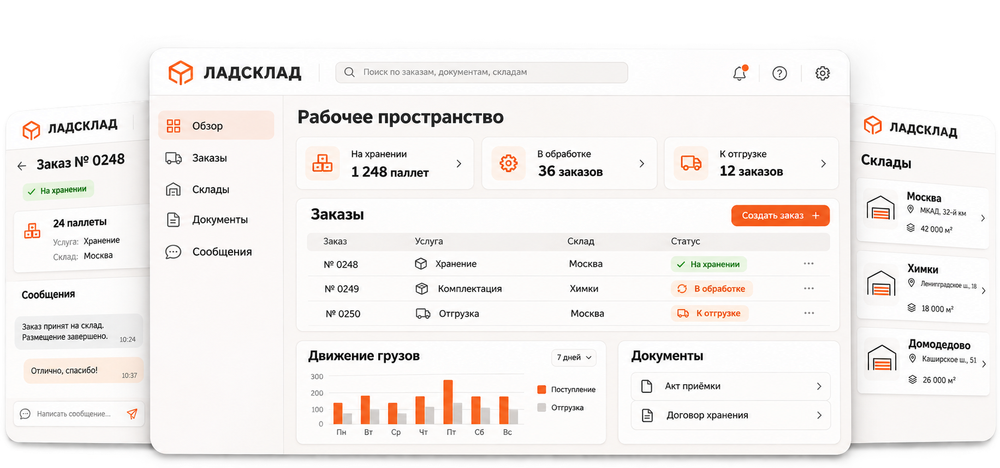
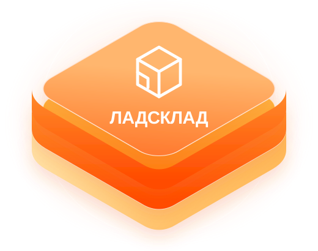
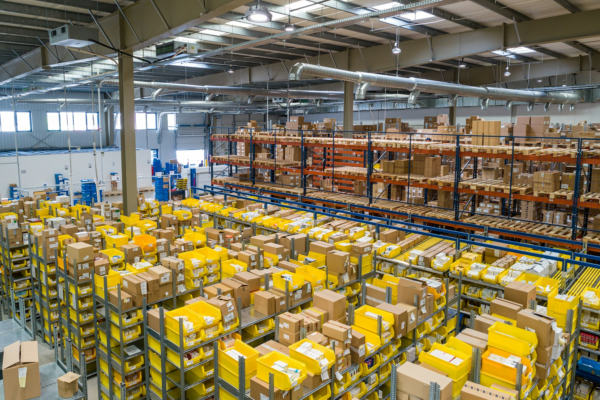
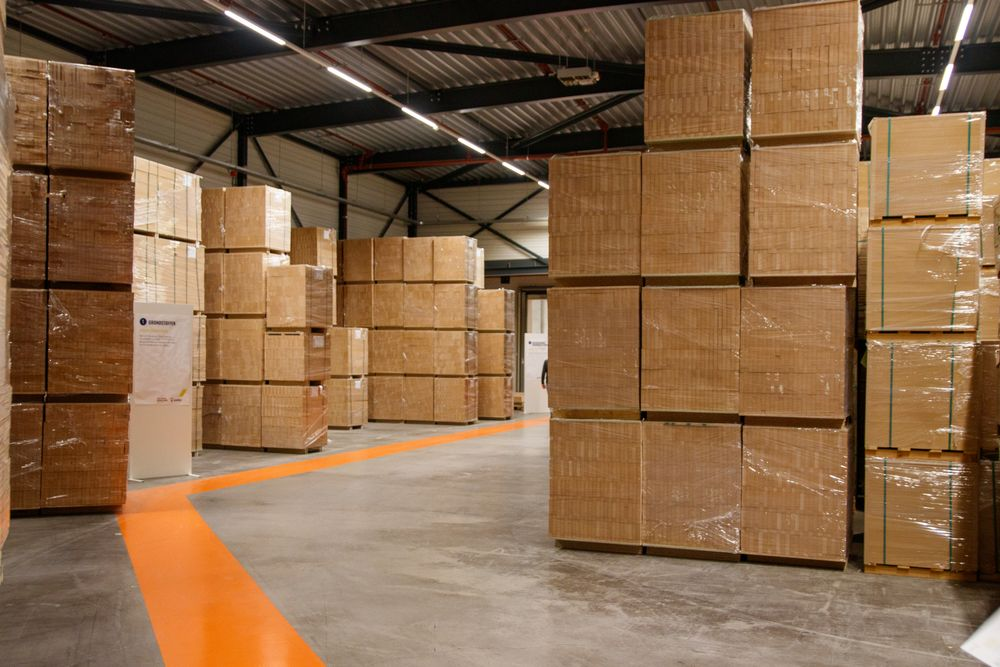

Клиент
Рассказываете, что нужно хранить, в каком объёме и на какой срок.
ЛАДСКЛАД · ИНТЕГРАТОР СКЛАДСКИХ УСЛУГ
Подбирайте склад, управляйте заказами и общайтесь с менеджером — в одном рабочем пространстве.

ЛАДСКЛАД объединяет клиентов и 3PL-операторов в одной системе работы.
Рассказываете, что нужно хранить, в каком объёме и на какой срок.

Подбираем склад, согласуем услуги и координируем работу.
Принимают, хранят и отгружают ваш товар по согласованным условиям.
Управляйте складскими услугами в общем рабочем пространстве.
24 паллеты · Товары для дома
Договор хранения.pdf
Акт приёмки.pdf
Приёмка завершена. Акт добавлен в документы.
Вся переписка сохраненаОт хранения партии до полного цикла фулфилмента.
Паллетное, стеллажное и мелкоячеечное.
Приёмка, комплектация, упаковка и маркировка.
Подготовка заказов, отгрузка и возвраты.
Температурный режим и специальные условия подбираем под требования груза.
Расскажите о грузе, объёмах и географии. Подберём склад и нужные услуги для первого запуска.

Согласуем приёмку, хранение, обработку и отгрузки в понятном формате работы с оператором.

Подключайте новые площадки и услуги по мере роста. Заказы, документы и коммуникация остаются в одном контуре.
Подберём склад для вашего груза
или подключим вашу площадку к сети.